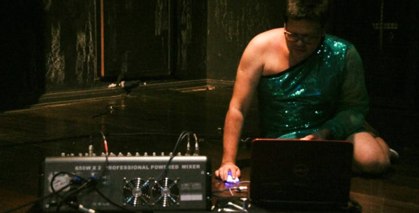
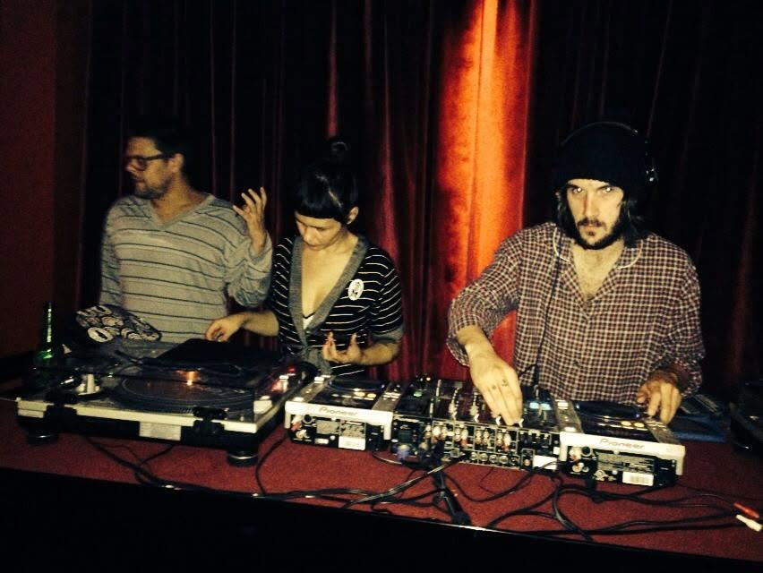

Música
Trilhas e
criação sonora
Vídeos
Romeu é um peixe no aquário e Tabaco! (2002) · Walk East e #2 (2007) · Closer, de Cristiane Bouger (2005).
Performance
Hipopótama, de Cândida Monte (2010).
Ao vivo
Mais Uma Peça Selecta, de Princesa Ricardo Marinelli e Michelle Moura (2007–2008) · Pão com Linguiça, da Cia Entretantas Conexão em Dança (2017).
Pão com linguiça. 2017. Teatro José Maria Santos, Curitiba. Foto: Erika Mitiko

Noite e DJ
desde 2011
Desde 2011 trabalhei como promoter, produtor de festas e DJ na noite curitibana, tendo tocado em clubs e bares como V.U., Bar do Simão, Vitreaux, Paradis Club, Rua Pagu, Soviet, Atari, Maracangalha, Jokers, Camaleão, entre outros.
Gustavo Bitencourt discotecando no Paradis Club, 2014, back to back com Isa Todt. Foto de Ana Zacharias.

31